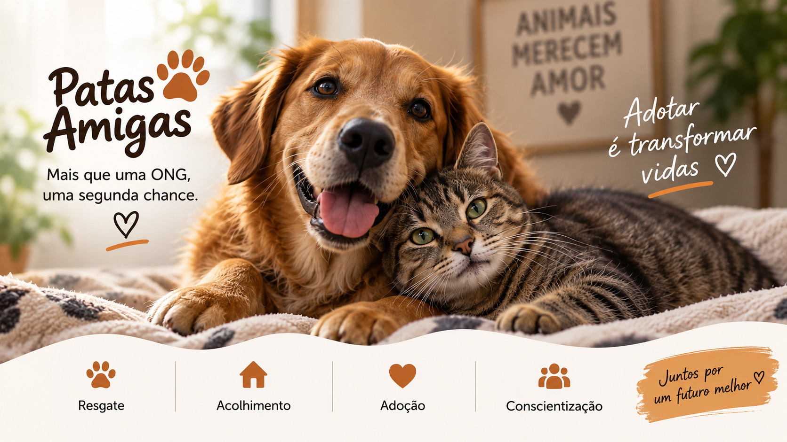

Quem somos
A ONG Patas Amigas trabalha no resgate e cuidado de animais abandonados, ajudando na recuperação e na busca por um novo lar. Nosso objetivo é dar uma nova oportunidade para cães e gatos que precisam de cuidado e proteção.

Como ajudar
Você pode ajudar através de doações, adoções responsáveis ou participando das nossas atividades como voluntário.
Adote
Dê uma nova oportunidade para um animal resgatado.
Seja voluntário
Ajude nos cuidados e nas atividades da ONG
Faça uma doação
Ajude com alimentos, medicamentos e outros cuidados.
Entre em contato
E-mail: contato@patasamigas.org
Telefone: (11) 99999-9999
São Paulo - SP